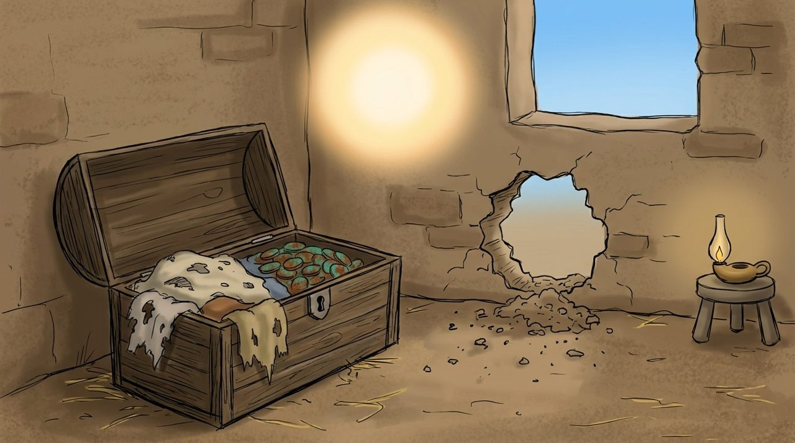

1 · 6:19–21
보물이 있는 곳에
당시 재산은 좋은 옷, 곡식, 동전이었어요. 옷은 이 먹고, 곡식은 벌레가 먹고, 흙벽 집은 도둑이 뚫고 들어왔어요.
“네 보물 있는 그곳에는 네 마음도 있느니라.” 무엇에 시간과 돈을 쓰는지 보면 내 마음이 어디 있는지 알 수 있어요.
깊이 보기 · 하늘의 보물
하늘의 보물은 죽어서 받는 보상만이 아니에요. 가난한 사람을 돕고(19:21), 하나님을 사랑하고, 사람을 살리는 일은 이미 지금 영원한 가치를 가져요.